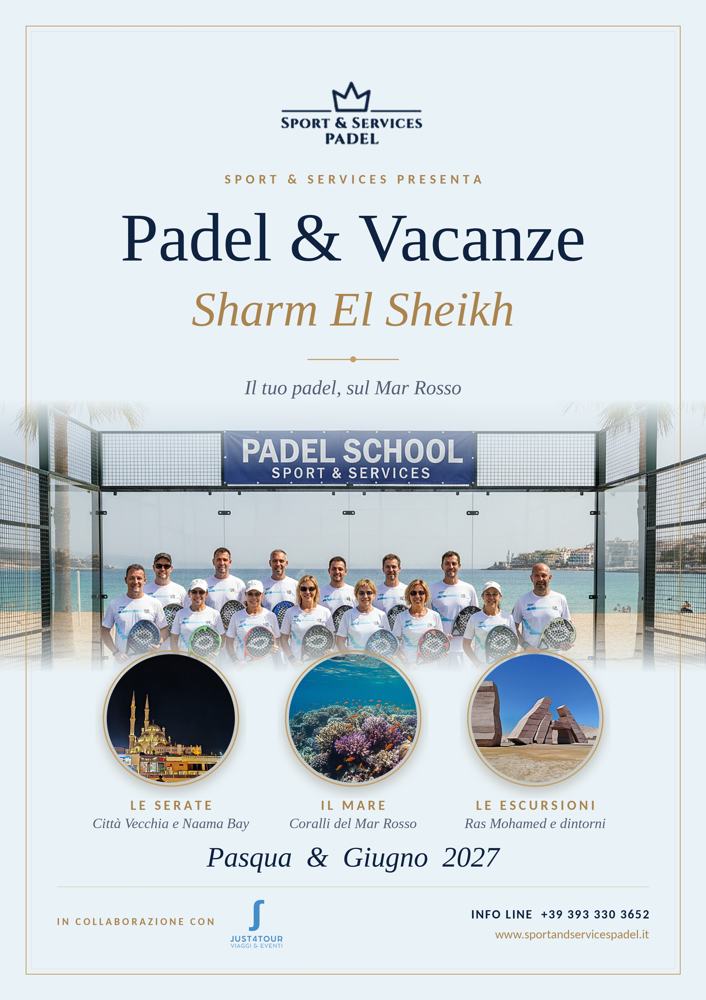
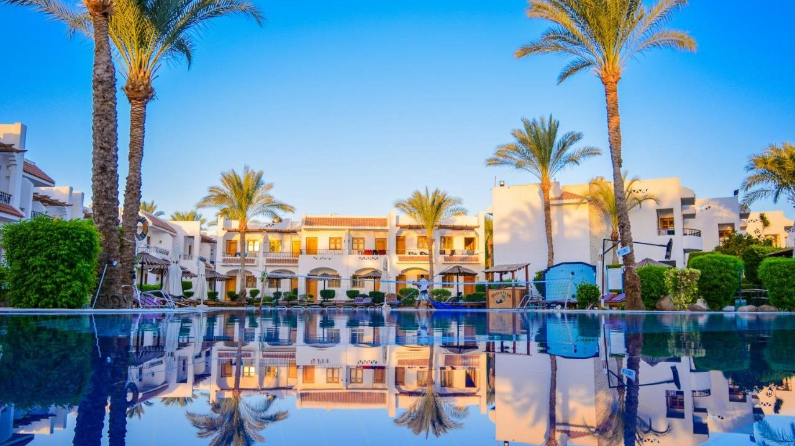
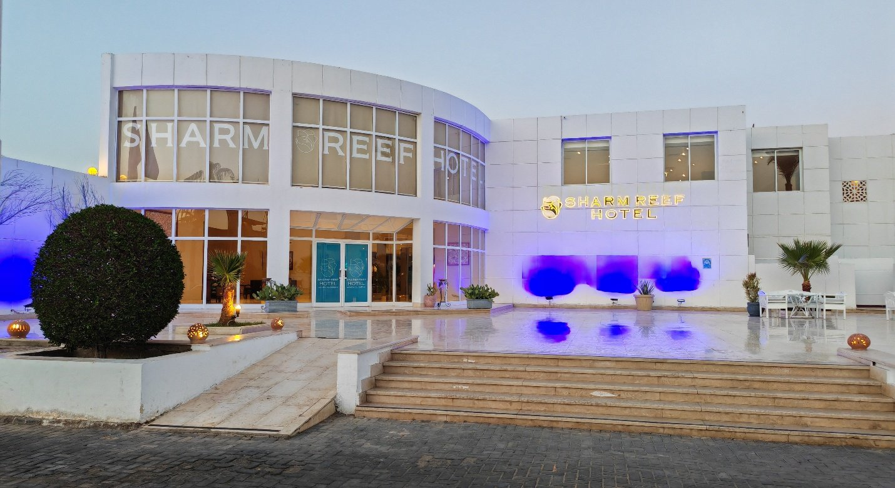
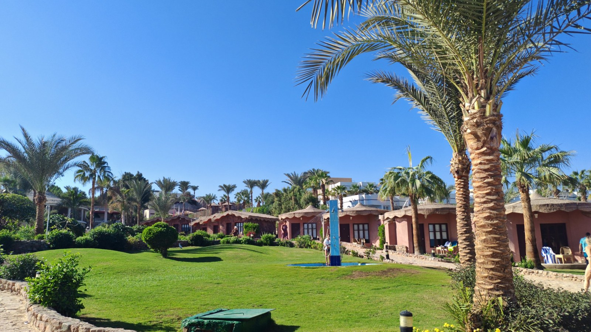
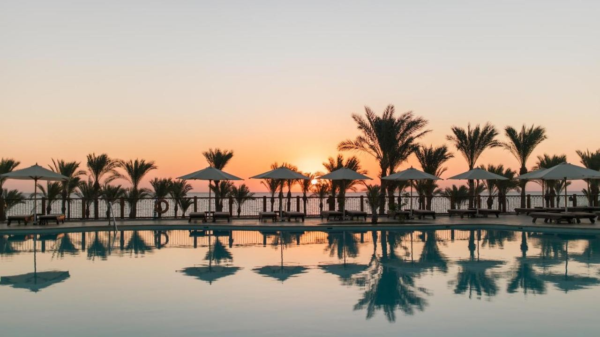
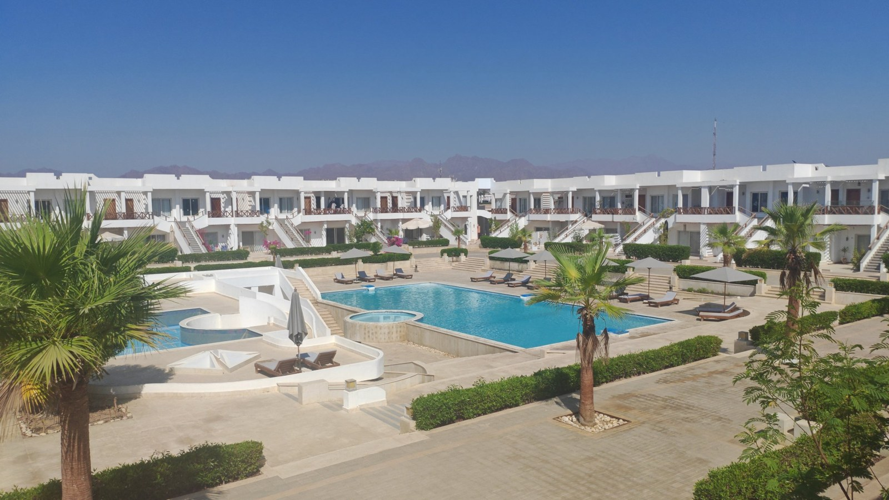
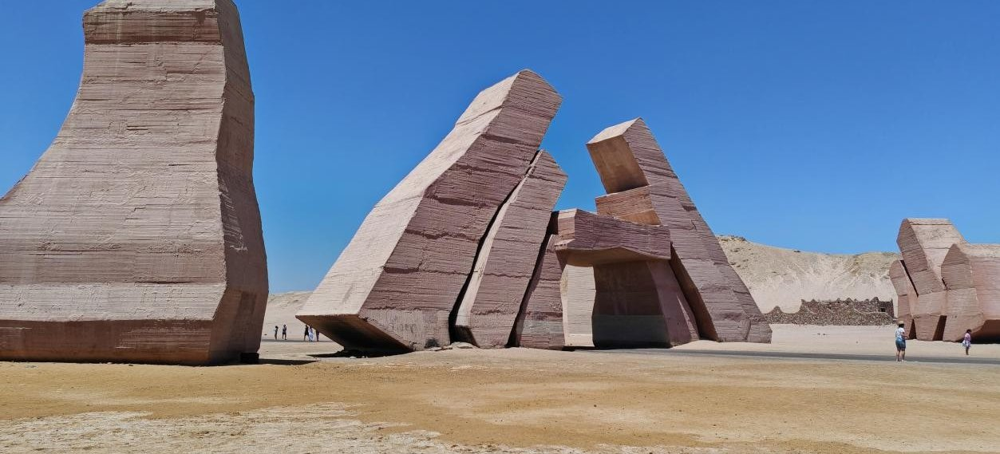
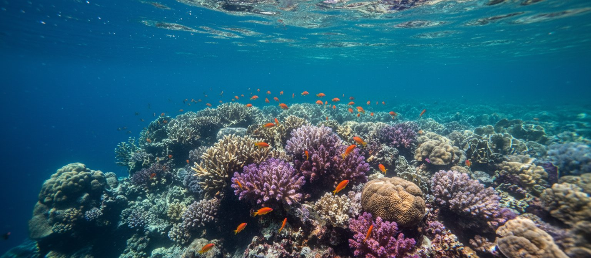
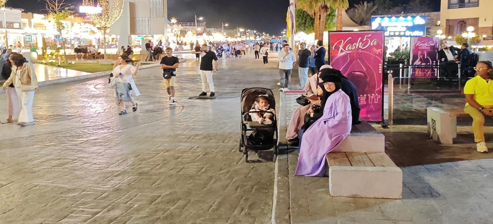
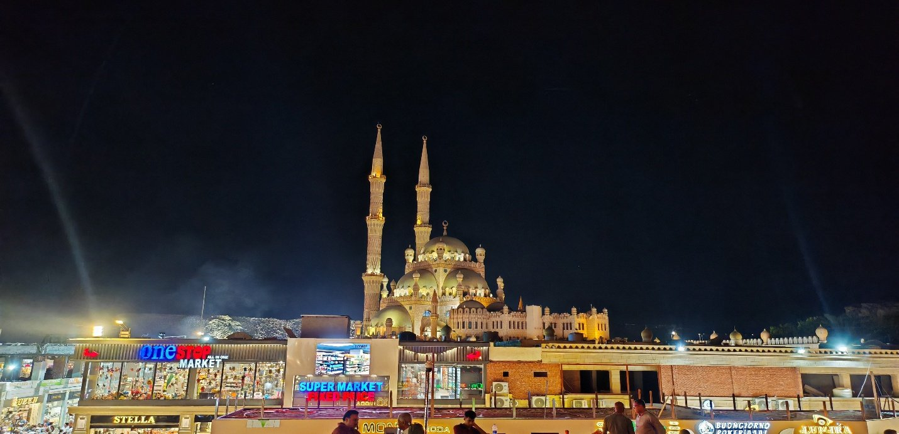

SPORT & SERVICES PRESENTA
Padel & Vacanze
Sharm El Sheikh 2027
PARTENZE DA | PASQUA 2027 | GIUGNO 2027 |
ROMA · MILANO · NAPOLI | 23 – 30 marzo | 22 – 29 giugno |
VENEZIA | 22 – 29 marzo | 23 – 30 giugno |
Pasqua: domenica 28 marzo, compresa in entrambe le partenze di marzo.
Roma: la partenza di giugno comprende il 29 giugno, festa dei Santi Pietro e Paolo, patroni di Roma.
Organizzato da Sport & Services in collaborazione con Just4Tour
Sei pronto per una vacanza indimenticabile che unisce relax, mare e la tua passione per il padel? La Padel School Sport & Services si trasferisce a Sharm El Sheikh per offrirti un’esperienza unica.
12 ore
di clinic con istruttori qualificati FITP
Torneo
Sharm Slam Padel Cup con viaggio premio
Escursioni
Ras Mohamed, El Fanar, Naama Bay e Città Vecchia
LA PADEL SCHOOL
La tua vacanza padel a Sharm
Questa è l’occasione perfetta per migliorare il tuo livello di gioco o imparare le basi del padel, il tutto in una location da sogno. Il pacchetto prevede due sessioni giornaliere di 90 minuti per 4 giorni (12 ore in totale) con istruttori qualificati FITP: imparerai le basi, perfezionerai la tecnica e scoprirai nuove tattiche di gioco. A chiudere la settimana, un torneo finale riservato ai partecipanti alla School.
IL TORNEO
Sharm Slam Padel Cup
Se cerchi una sfida ancora più emozionante, puoi partecipare al torneo di padel “Sharm Slam Padel Cup”. La coppia vincitrice si aggiudica una settimana a Sharm El Sheikh con volo, trasferimenti e soggiorno inclusi. I partecipanti alla Padel School sono iscritti di diritto, se desiderano prendere parte all’evento.
NON SOLO PADEL
Alla scoperta di Sharm El Sheikh
Il pacchetto include escursioni alla scoperta delle meraviglie di Sharm: la Porta di Allah, il Lago Magico e lo snorkeling sulla barriera corallina. Avrai mezza giornata tutta per te al rinomato stabilimento El Fanar Beach, con attrezzatura, lettino e ombrellone inclusi, e la sera ci sposteremo a Naama Bay, cuore della vita notturna e dello shopping.
DOVE SOGGIORNERAI
Hotel e appartamenti
La Padel School si svolge in un nuovissimo campo vicino al mare. Potrai scegliere tra hotel e residence a 4 e 5 stelle e appartamenti in residence con piscina. Alcune strutture sono sul mare o a pochi passi dal campo, per le altre è disponibile un servizio navetta. Di seguito le sistemazioni proposte.
Dive Inn Resort
★★★★ QUATTRO STELLE

Immerso in giardini tropicali, questo resort dispone di un centro immersioni con istruttori professionisti sulle rive del Mar Rosso e offre una navetta gratuita per la spiaggia del golfo di Um El Seid. La piscina all’aperto in stile laguna è circondata da alte palme e incantevoli laghetti. Dopo l’allenamento nel centro fitness potrai concederti una sauna o un massaggio.
Tutte le camere hanno balcone privato o terrazza con vista sulla piscina, TV satellitare, ampio armadio e toeletta con specchio. Il ristorante principale, affacciato sulla piscina, propone buffet o menù alla carta; a bordo piscina si servono spremute fresche e tramezzini, mentre il Nagham Night Club offre musica egiziana e balli.
MARE E PADEL
Il resort dista circa 2 km dal campo di padel. Il mare è raggiungibile con il servizio navetta.
Sharm Reef Hotel
★★★★ QUATTRO STELLE

Dotato di spiaggia privata e di 2 piscine all’aperto con terrazza solarium, lo Sharm Reef Hotel si trova nella zona della scogliera di Om El Seid, nel centro di Sharm El Sheikh, a pochi passi dal centro commerciale Il Mercato e a 20 minuti d’auto da Naama Bay.
Le camere hanno balcone o terrazza con vista giardino o piscina, aria condizionata e, in alcuni casi, angolo cottura con zona pranzo. Ogni mattina viene servita una colazione a buffet; il ristorante propone cucina locale e internazionale e il bar una selezione di drink e snack. La posizione è ideale per immersioni e snorkeling. Tra i servizi: centro fitness, massaggi presso il centro benessere dello Shores Golden, spettacoli serali di danza del ventre e folclore egiziano e accesso gratuito al parco acquatico del resort.
MARE E PADEL
L’hotel dista poco più di 1 km dal mare, raggiungibile a piedi in 15 minuti. È convenzionato con lo stabilimento Reef Beach, servito da una navetta gratuita con corse ogni ora. Il campo di padel è adiacente allo stabilimento.
Xperience Hills
★★★★ RESIDENCE QUATTRO STELLE · SOLO ADULTI

Immerso nel verde, a 1,5 km dalla spiaggia di Ras Um El Sid, l’Xperience Hill-Top Beach Resort è una struttura riservata ai soli adulti, con giardino, zona spiaggia privata sul mare, ristorante e bar. Offre parcheggio privato gratuito, reception 24 ore su 24, transfer aeroportuali, servizio in camera e WiFi gratuito in tutta la struttura.
Tutte le camere dispongono di aria condizionata, scrivania, terrazza con vista sul mare, bagno privato, TV a schermo piatto, armadio, bollitore elettrico, lenzuola e asciugamani. Le coppie ne apprezzano particolarmente la posizione, valutata 9,3 per un viaggio a due. La formula prevista è il solo soggiorno, ideale per vivere Sharm in libertà.
MARE E PADEL
Il residence ha una spiaggia privata sul mare. I campi di padel sono raggiungibili con il servizio navetta.
The Grand Hotel Sharm El Sheikh
★★★★★ CINQUE STELLE · ALL INCLUSIVE

Un servizio di prima classe a 700 metri da Reef Beach, nel quartiere El Hadaba. Il resort offre piscina all’aperto, parcheggio privato gratuito, giardino, terrazza e bar, oltre a bancomat, servizio concierge e cambio valuta.
Le camere dispongono di aria condizionata, scrivania, TV a schermo piatto, bagno privato, armadio, bollitore e balcone con vista giardino. La colazione è a buffet o continentale; il ristorante propone cucina indiana, italiana e messicana, con opzioni vegetariane, senza latticini e halal su richiesta. Per il tempo libero: area giochi per bambini, biliardo e freccette, in una zona famosa per lo snorkeling.
MARE E PADEL
L’hotel è sul mare e dispone di una spiaggia privata. Il campo di padel è a 700 metri dal resort.
Appartamenti – Formula Roulette
RESIDENCE CON PISCINA · SOLO SOGGIORNO

Per chi cerca indipendenza e la massima convenienza, la formula roulette offre la sistemazione in appartamento all’interno di residence con piscina. Tutti gli appartamenti sono dotati di cucina, perfetti per vivere la vacanza con i propri ritmi.
Con la formula roulette l’appartamento viene assegnato dall’organizzazione: è la soluzione più economica per partecipare al clinic o al torneo senza rinunciare al comfort.
RESIDENCE E PADEL
Gli appartamenti si trovano in residence con piscina, a una distanza massima di 1–2 km dai campi di padel. Il mare è a circa 2 km, raggiungibile con il servizio navetta. Tutti gli appartamenti sono dotati di cucina.
ESCURSIONI E SERATE
Le esperienze incluse
Ras Mohamed e la Porta di Allah

Una fantastica escursione da Sharm al Parco Nazionale di Ras Mohamed, con una guida che ti racconterà cosa vedrai lungo il tragitto. Farai snorkeling nella barriera corallina più bella d’Egitto, tra fondali incredibilmente colorati, e scoprirai le mangrovie, gli unici alberi che crescono in acqua salata. Visiterai poi il Lago Magico, grande e profondo, ideale per una nuotata, e ascolterai le storie del beduino che gli ha dato il nome. L’attrezzatura per lo snorkeling non è compresa.
Snorkeling a El Fanar Beach

Una giornata di mare allo stabilimento El Fanar Beach, con bar ristorante sul mare e scogliere che rendono l’atmosfera magica. Ingresso con ombrellone e lettini per tutta la giornata; dal pontile potrai tuffarti nel mare di Sharm e ammirare la barriera corallina, con maschera e pinne a disposizione gratuitamente.
Serata a Naama Bay

Shopping e vita notturna a Naama Bay, meta frequentata ogni anno da migliaia di visitatori. È l’area del versante egiziano del Mar Rosso con la più alta concentrazione di alberghi e villaggi, famosa per la vita notturna e per i negozi e centri commerciali lungo il Boulevard Principe del Bahrain.
Serata alla Città Vecchia

Lasciamo per un po’ spiagge e resort per immergerci nell’atmosfera autentica della Città Vecchia (Sharm Old Market), dove colori, profumi e suoni ti avvolgono. Passeggeremo tra i vicoli animati, scopriremo i mercati e i sapori veri dell’Egitto, visiteremo la splendida Moschea Al Sahaba e potremo gustare una cena tipica in un ristorante locale: un’esperienza lontana dai soliti percorsi turistici.
QUOTE E SERVIZI
Formule viaggio
Le formule disponibili variano in base alla sistemazione: prima colazione, mezza pensione o all inclusive negli hotel, solo soggiorno all’Xperience Hills e negli appartamenti. The Grand Hotel prevede solo la formula all inclusive.
PACCHETTO | QUOTA A PERSONA |
|---|---|
Padel School hotel o appartamento, formula a scelta | da € 1.047 |
Torneo Sharm Slam Padel Cup hotel o appartamento, formula a scelta | da € 740 |
Accompagnatori hotel o appartamento, formula a scelta | da € 599 |
TUTTO COMPRESO
Il pacchetto include
- Volo diretto per Sharm El Sheikh andata e ritorno
- Trasferimenti aeroporto – hotel andata e ritorno
- Sette notti in hotel o appartamento con la formula scelta
- Clinic padel: 12 ore settimanali di allenamento in campo (opzionale)
- Torneo tra i partecipanti alla Padel School e/o partecipazione alla “Sharm Slam Padel Cup” (opzionale)
- Escursione a Ras Mohamed e alla Porta di Allah
- Giornata a El Fanar Beach con lettino, ombrellone e snorkeling con maschera e pinne in dotazione
- Trasferimento e serata a Naama Bay per lo shopping
- Serata alla Città Vecchia (Sharm Old Market)
- Viaggio premio per la coppia prima classificata alla “Sharm Slam Padel Cup”
- Kit viaggio con t-shirt padel e cappellino
- Assicurazione CSAIn
- Assicurazione viaggio
IN OMAGGIO
- 4 buoni da € 50 non cumulabili (valore complessivo € 200), per le proposte di viaggio Just4Tour
- 10 buoni da € 10 non cumulabili (valore complessivo € 100), per lezioni individuali di padel e tennis o affitto campo presso i club convenzionati
- 10 buoni sconto da € 10 non cumulabili (valore complessivo € 100), per l’iscrizione a tornei, clinic e Padel School organizzati da Sport & Services
LA SETTIMANA
Programma
GIORNO1 |
| |||||||||
GIORNO2 |
| |||||||||
GIORNO3 |
| |||||||||
GIORNO4 |
| |||||||||
GIORNO5 |
| |||||||||
GIORNO6 |
| |||||||||
GIORNO7 | Trasferimento dall’hotel all’aeroporto | |||||||||
L’organizzazione potrà apportare modifiche al programma.
COPERTURE
Assicurazioni
Europ Assistance “Viaggi Europa”
Assistenza 24 ore su 24 in tutta Europa e in alcuni paesi del bacino del Mediterraneo (tra cui Egitto, Algeria, Marocco, Libia e Tunisia), con presa in carico o rimborso delle spese mediche in caso di malattia o infortunio, anche per attacco terroristico. Puoi aggiungere le garanzie: Covid Protection, Bagaglio, Infortuni in viaggio, Tutela legale in viaggio e Assistenza on the road.
CSAIn “Basic”
RCT tesserati con massimale di € 400.000 per sinistro, con il limite di € 300.000 per ogni persona danneggiata e di € 300.000 per danni a cose, anche se appartenenti a più persone. È prevista una franchigia di € 1.000 per ogni sinistro con danni a cose, salvo scoperti e franchigie superiori previsti in polizza per particolari garanzie.
DA SAPERE
Informazioni utili
Numero chiuso Padel School
Per garantire un’esperienza di qualità e la massima attenzione degli istruttori, ogni gruppo si forma con un minimo di 4 e un massimo di 8 partecipanti per data di partenza.
Torneo “Sharm Slam Padel Cup”
Il torneo parte con un minimo di 6 coppie e un massimo di 16 coppie. La coppia prima classificata vince un soggiorno a Sharm El Sheikh per 2 persone: 7 notti all inclusive in camera doppia, volo e trasferimenti aeroporto – hotel andata e ritorno.
Pagamenti
Acconto del 40% all’iscrizione; saldo entro 40 giorni prima della partenza.
Cancellazioni e penali
Il biglietto aereo non è rimborsabile in caso di cancellazione, in qualsiasi momento. Sul resto della quota si applicano le seguenti penali: 25% fino a 41 giorni prima della partenza; 50% da 40 a 21 giorni; 75% da 20 a 8 giorni; 100% da 7 giorni prima della partenza o in caso di mancata presentazione. È possibile sostituire il partecipante con un’altra persona, con l’eventuale costo del cambio nome sul volo a carico del partecipante. Consigliamo di stipulare un’assicurazione annullamento facoltativa.
Bagagli
È incluso il bagaglio a mano (40 × 30 × 20 cm). Bagaglio da stiva Wizz Air, a persona con acquisto online: 10 kg € 60, 20 kg € 85, 26 kg € 92, 32 kg € 100.
Bambini
Culla 0–2 anni gratuita. Terzo letto gratuito fino a 11 anni allo Sharm Reef Hotel e al The Grand Hotel; al Dive Inn Resort supplemento di € 70 per i bambini 3–11 anni. L’Xperience Hills è riservato agli adulti.
PADEL & VACANZE
Sport & Services
Info line +39 393 330 3652
info@sportandservicespadel.it · www.sportandservicespadel.it